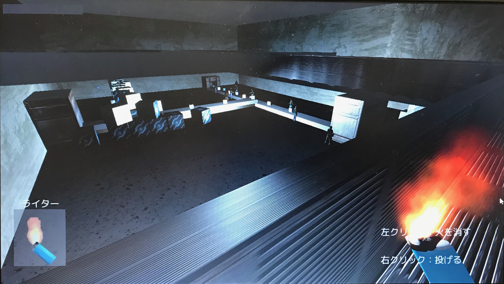

高専在学時に授業や研究以外にも，コンテストへの参加を積極的に行ってきたため，企画から設計，実装までの開発経験が豊富にあります．また，様々なプラットフォームや言語での開発経験があり，目的に応じて新しいライブラリやフレームワークに挑戦してきたため，新しい環境での吸収の早さには自信があります．
Webアプリケーションの開発は特に多く，サーバサイド・クライアントサイドのどちらでも対応が可能です．
開発経験の多さから，チームでの開発では全体の取りまとめやアドバイスをしつつ，核となる部分の実装を担当することが多いです．
| 言語 | 学習期間 | 用途 | ライブラリ等 |
|---|---|---|---|
| C++ | 4年 | 競技プログラミング IoTシステム開発 画像処理 機械学習 |
OpenCV OWLIFTLib等 |
| JavaScript | 4年 | Webアプリケーションの開発 Androidアプリケーション開発 普段の簡単な数値計算，解析等 |
jQuery Node.js Vue.js D3.js |
| C# | 3年 | Unityでのゲーム開発 Windowsアプリケーション開発 |
|
| PHP | 3年 | Webアプリケーション開発 | twitteroath |
| Python | 2年 | 数値解析 画像処理 機械学習 |
matplotlib opencv等 |
| Java | 2年 | Androidアプリケーション開発 |
クラス内での総合SNS．「特定の誰かではなく，クラス内全員に対して質問をしたい」「1度された質問に対しての回答を共有したい」といった考えが出発点．
クラスのほぼ全員が利用していたTwitterのリストを参照することでログイン機能を実装し，外部からのログインを防いだ．
質問・回答ページでは質問や回答をデータベースで管理し，科目名や学年での検索を行えるようにした．また，匿名での投稿が可能なように実装した．
某アニメ映画のようなものを作りたいという意見を取り入れ，自分のアバターを持ち自由に移動が可能な3D空間とリアルタイムでのチャット機能を実装．空間内のオブジェクトやアバターはチームメンバーが作成した3Dモデルを使用した．また，アバターの移動データもNode.jsで発信・取得した．
移動には通常のFPSゲームと同様にWASDキーを利用し，特定のキーを押すことでチャットの入力エリアにフォーカスするようにした．また，チャット領域はescapeキーで表示・非表示を自由に切り替えられるように実装した．
その他，SQLインジェクションやXSS等のメジャーな攻撃に対し，適切なエスケープを行なって無効化した．
開発はチームで行い，自分はTwitterログイン，課題に対する質問と回答，チャット機能等のサーバサイドを主に担当．その他全体の進捗の管理と適宜フォローを行なった．
CentOS 6系を使用し，Google Chrome, FireFoxで動作させることを前提とした．
サーバサイドではPHP,Node.jsを用い，動的なリアルタイム処理が必要となる部分ではNode.js，それ以外のログインや質問や回答の投稿を行う部分ではPHPで処理を行うように，Nginxで分岐を行なった．また，データベースはMySQLを利用した．
クライアントサイドではD3.jsとjQueryを用い，Node.jsによって得られたデータとの連携を行なった．
落ちているものや施設内の機器を組み合わせて任意の現象を起こして敵を倒す(やり過ごす)ことで施設からの脱出を目指すFPSゲーム． 「周りにあるものを組み合わせて目的を達成する」「目的を達成するに至る方法が1つに限定されない」といったゲームを作成したいという考えが出発点．

ものを拾う・使う・組み合わせる等の動作や，敵の挙動・操作キャラの発見に至るアルゴリズムなどを，Unityの当たり判定をうまく利用することで全て自作した．また，オブジェクト指向プログラミングを意識し，クラス継承などを効果的に用いることで，基本的な機能はそのままに，特定の組み合わせでのみ現象が起こるように実装を行なった．
開発はチームで行い，自分を含める2名が全てのプログラミングを行なった．途中ペアプログラミング等を試しながらの開発となった．
Windows8でUnityのC#を用いて開発を行なった．
「第3回学生スマートフォンアプリコンテスト」にて作成
「この時間までには電車が出なければいけない」という時間を設定することで，最寄駅の電車の発車時刻から起床時間を逆算して起こすアラームアプリ．その時の天候によってアラームが鳴る時間が変わり(悪天候時は早く鳴る)，起床できなかった場合には画像フォルダからランダムが画像が1つ消える．
「何時何分の電車に乗るから何時に起きないといけないといった計算が面倒」「天気によって移動手段などに変化があるため起きたい時間が違う」「起きなかった場合の罰則がないと起きれない」といった考えが出発点．
設定された時刻より前に発車する最も遅い電車を求め，GPSから現在地，現在地からその場所の天気を調べ，その天気に応じてアラームが鳴る時間が変わるように実装した．
また，アラーム鳴動時に画像フォルダ内からランダムで選ばれた画像が表示され，止められなかった場合その画像を消去することで，その画像との最後の別れを演出した．
チームでの開発であったが，実装は全て自分一人で行った．GPSで得たデータをもとに天気のAPIを使ってその場所の天候状況を調査した．
サーモカメラを搭載した安価かつ小型のIoTシステム．
「汎用性の高いサーモカメラは大型かつ高価なため，簡単な実験やそれほどの性能を必要とはしないシステムへの搭載には不向きである」といった考えが出発点．
SDKが公開されているUSB接続で動く小型のサーモカメラをRaspberry Piに接続することによって遠隔からの操作を可能にした．
Raspberry Piでサーモカメラとカメラモジュールからの映像を取得し，接続中の外部の端末に送信するように実装し，そのデータを受信・解析することで性能の向上を行った．
データの損失を避けるためデータの送受信にはWebSocketを用い，Wi-Fi経由で起動，終了，設定の変更，データの送受信を行えるようにした．
データの解析では，フレームレートの計測や，2つのカメラ間の撮影範囲のズレの修正，撮影タイミングのズレなどの補正を行った．
日付だけではなく実際に開催する時間も含めてまとめて調整が可能なwebアプリのプロトタイプ．
「(特に飲み会や遊ぶ場合において)時間をできる限り確保したい」「1時間ずれるだけで参加者が増えるのではないか」といった考えが出発点．
ユーザが入力する際に，各日付の参加が可能な時間の範囲を指定して日程の調整が行われる．参加者最大かつ開催時間が最大となるように日程の候補が算出される．
時間の指定は，可能な時間の始点と終点をクリックorタップすることによって行い，中抜けする場合の調整も可能．
少しでも入力の手間や誤操作を減らし，クロスプラットフォームを目指すために時間の始点・終点での入力方法を考案した．
始点としてクリック(タップ)した領域を保存しておき，終点選択時に始点-終点間の領域を全て塗りつぶすように実装した．
プロトタイプであるため，サーバサイドの処理は行わず，クライアントサイドのみで実行できるようにした．